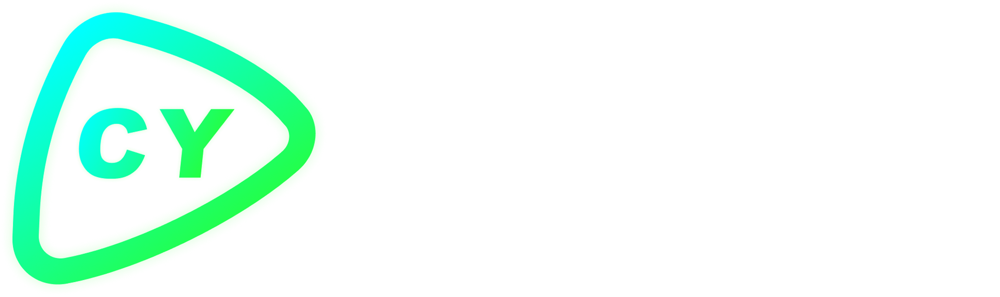

Brand Data Coverage
Build a complete and consistent brand presence for AI search.

YOUR BRAND CONTENT HUB FOR AI SEARCH
Ceying GEO helps companies build content assets that AI systems can understand, cite, and recommend, increasing visibility across conversational search and generative discovery.
ABOUT
Ceying GEO is a brand content growth platform built for the AI search era. It helps teams organize brand knowledge, plan high-intent topics, create reusable content assets, and improve how often their brand appears in AI-generated answers.
Build a complete and consistent brand presence for AI search.
Continuously expand reusable content across your organization.
Cover brand, product, category, use-case, and buyer questions.
Support the full journey from content creation to performance review.
CORE CAPABILITIES
Standardize your company profile, offerings, proof points, and market position across your website, content channels, and AI answers.
Build a content roadmap around brand, product, category, use-case, and long-tail questions that generative search systems can interpret.
Improve structure, clarity, and semantic depth for the questions buyers ask most often, increasing the consistency of AI citations.
Turn FAQs, solutions, insights, brand materials, and industry knowledge into a reusable source of truth for every team.
Coordinate assignments, editing, approvals, publishing, and asset reuse in a workflow that stays visible and accountable.
Connect AI visibility, brand mentions, citation performance, and distribution results to continuously improve your content strategy.
PRODUCT PLATFORM
Bring brand knowledge, AI search performance, team workflows, content operations, media distribution, and analytics into one connected system, from planning and production to publishing and optimization.
SYSTEM MODULES
See brand content assets, core metrics, and priority actions at a glance.
Track AI search reach, visibility trends, citations, and content impact.
Evaluate your AI search presence and identify content gaps and growth opportunities.
Monitor queries, content performance, distribution results, and audience behavior.
Manage owners, deadlines, progress, approvals, and production cadence.
Organize drafts, reviews, publishing states, and version history in one place.
Manage publishing channels and track distribution status and reach.
Centralize brand assets, images, documents, metadata, and site configuration.
BUSINESS VALUE
Increase how often your brand appears in AI search and answer experiences.
Improve team output with structured workflows and reusable content assets.
Keep brand knowledge and content standards aligned across every team.
Build a growing library of FAQs, articles, use cases, and solution content.
MEDIA NETWORK
Connect your brand stories, industry insights, solutions, and product information with a global mix of publishers, content platforms, and B2B networks, all managed in one distribution workflow.
Distribute content across LinkedIn, YouTube, TikTok, Instagram, X, Reddit, Medium, Substack, and other high-value channels.
Publish company profiles and industry content across trusted B2B directories, review platforms, and professional networks.
Ceying GEO helps teams create content that AI search systems can understand, then distribute it across publishers, social platforms, and B2B networks to improve reach, citation potential, and search visibility.
GET STARTED
Turn your brand knowledge into a content system that stays visible, understandable, and recommendable across AI search and generative answers.